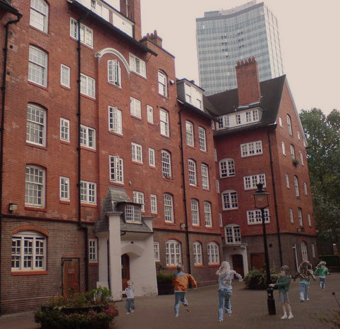
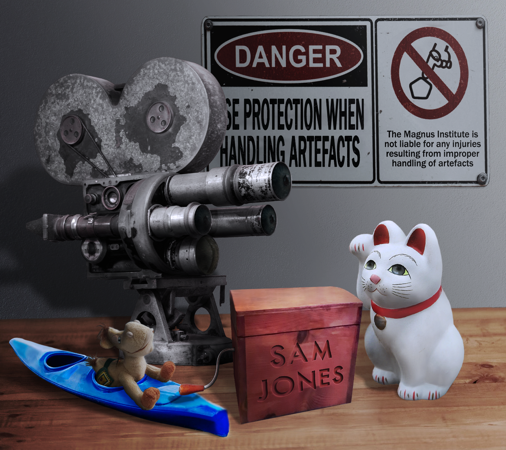

|  |
Bring Your Child To Work Day (23rd April 1996)
Last Friday was ‘Bring Your Child To Work Day’ at the Institute, an interesting concept borrowed from our friends across the pond, and one that raised a lot of interest from many of us at the Institute.
Now we’ve had glowing accounts from everyone involved in organising the event, and despite a few technical difficulties – over the weekend an engineer came in to fix the issue with the lights on the Reception floor – it all seems to have gone well.
Local teen Will Harvey impressed us all with his quick thinking during the brief power outage, not only managing to rustle up a sizable batch of volunteers to light the old paraffin lamps our Institute must have used over 200 years ago (if the dust is anything to go by!), but also using his creativity to conjure up some scary stories which spooked even our most seasoned statement-taking staff members.
The final event of the day, afternoon tea, was a resounding success and our Human Resources team enjoyed reading future plans submitted by our young visitors, many of whom seem to be angling for the job of next Head Archivist – our own Mrs Robinson will have to sleep with one eye open.
Rounding off the event, we are happy to announce that next week, the Institute will be having an A-List visit from the up-and-coming band ‘Secondhand Softness’, who have booked out our Archival floor to film a truly spooky music video. Anyone who happens to be on break that day is accordingly welcome to pop down and watch – if you have the guts to get past Artefact Storage, of course!
Continue reading... |
|
Artefact no. B-0147 (S) Airing Goes Awry (5th March 1996) Work was disrupted on Friday afternoon due to a minor kerfuffle.
It began in the library, where a student researcher — who prefers to retain the comforting illusion of anonymity for the purposes of this entry — caused some concern amongst staff and patrons. She was discovered, eyes sunken and countenance feverish, viciously marking piles upon piles of books pulled from the Occult-adjacent Fiction section. Inquiries as to her behaviour were met with only unintelligible but vehement muttering about the letter ‘H’.
As a precautionary measure, Diana called on the assistance of officer Richard Davies, best known here at the Institute for his timely intervention in the Archives Crab Incident of 1995; however, he collided in the foyer with a pair of employees carrying artefact no. B-0147 (S) out for its monthly cathartic airing with some gusto. The impact appeared to further incense the artefact, setting off a cacophony of unearthly wails and generally alarming all present.
All is well that ends well, however, as Rosie was able to ameliorate the situation with generous servings of tea and biscuits — and it has provided Artefact Storage with valuable new insight into the nature of artefact B-0147 (S)!
Sonja indicates that researchers can look forward to documentation detailing these exciting discoveries soon. Soon.
Library staff, meanwhile, successfully distracted the student from her H-induced distress by playing the ‘Dancing Baby’ video on loop until she recovered her senses. As the cause of her fervor was determined to be neither supernatural influence nor malicious intent, she will retain her permissions to access Institute resources for her dissertation on ‘The Most Wifeable (etc.) Monsters’ on the condition that she get some sleep and refrain from further property damage. The terrifyingly organised Diana, of course, already has the entire relevant section back in order.
Continue reading... |
 |
Annual Institute Charity Pub Quiz
(26th February 1996) Annual institute charity pub quiz hailed a success.
This past Thursday night, the Beehive public house was the setting for the annual Magnus Institute Quiz.
In recent years the Quiz has gone from strength to strength, raising money for our community outreach program 'Eye on the Institute'.
The defending champions were back on top form: Snazzy Tapir have taken the title for the Human Resources department on seven consecutive occasions, including a flawless victory in 1994. It looked as if they were all set to take the title again with an early lead.
However, the combination of some of our finest minds from Artefact Storage proved to be somewhat of a challenge, with the Prickwillow Papers snatching the title in the last moments with their encyclopaedic knowledge of architecture and the prison system.
Recently appointed Head of the Institute Elias Bouchard was on hand to congratulate the valiant heroes on their knowledge of the Institute's founder, and to award the team with a well-earned bottle of champagne and a trophy, donated to the cause by the Fairchild family, long-time donors to the academic research within our fine institution.
This year's quiz has raised over a thousand pounds, and that means that we will open our doors to the general public as well as instigate an open learning pathway with local schools and educational facilities in the area.
Anyone wishing to volunteer towards the 'Eye on the Institute' program should contact their department head. Any inclusion will count towards their voluntary public service and will be treated as a holiday in lieu.
Continue reading... |
|  |
New Items in Artefact Storage
(25th January 1996) The Institute’s artefact storage department has received some new exciting additions.
Handled by staff member Mike, a ‘kayaking camel plush’ that exhibits paranormal behaviour by lulling surrounding individuals into a (false?) sense of paralysing comfort has been acquired into the collection.
Miek has eagerly welcomed this new addition to his ‘crew’ of previously collected objects showing similar emotional effects, and the object has been given the codename ‘Derek’ by the handler.
A particularly ominous set of cutesy but dangerous lucky cat miniatures was similarly recently delivered to us by respected collaborator Autumn Jarvis, and our always-reliable contact Rusne has granted us a fascinating old school, silent movie era video camera from her private collection.
As for things to come, we are still eagerly awaiting the arrival of a beautiful music box previously owned by one Sam Jones, which has a haunting and peculiar history which we are excited to be researching further. Updates to follow.
Continue reading... |
A Disappearance In Bournemouth (7th August 1996)
The Bournemouth community has been shaken by the disappearance of eighteen-year-old T̷͑͗ȟ̸̕o̷̲͛m̷̛̋ȁ̷̳s̵͒͑ ̴̈̕M̶̊̎ȋ̴̚c̵̄̚ḧ̸̀a̶̐͘e̶͌͆l̵͐͠ ̶͋͛D̵̿͝a̵͂͌n̴͊̏i̵̡̓e̸̅̓ļ̵̚s̸͋̅.
Last seen on 3 July, Ḓ̶̇ã̴̰n̴̺͒ȋ̶̍ĕ̶͂l̴͑̚s̷̭̍ has now been missing for over a month with no word on his whereabouts or condition.
The last known location of Ḓ̶̇ã̴̰n̴̺͒ȋ̶̍ĕ̶͂l̴͑̚s̷̭̍ comes from a police report made by an anonymous citizen. The citizen claims that they were with Ḓ̶̇ã̴̰n̴̺͒ȋ̶̍ĕ̶͂l̴͑̚s̷̭̍ at a local park around the time of his disappearance. They report that the two of them walked to a nearby house, and upon arrival, Ḓ̶̇ã̴̰n̴̺͒ȋ̶̍ĕ̶͂l̴͑̚s̷̭̍ entered alone, never to re-emerge.
‘T̷͑͗ȟ̸̕o̷̲͛m̷̛̋ȁ̷̳s̵͒͑ ̴̈̕ is a lovely young man, always going out of his way to help elderly members of the local community with their chores,’ says English teacher Sue Sims. ‘He was an utter delight to have in class. I hope he returns home safely soon.’
Having completed his A-levels earlier this year, Ḓ̶̇ã̴̰n̴̺͒ȋ̶̍ĕ̶͂l̴͑̚s̷̭̍' parents, Julia and Michael, report that Ḓ̶̇ã̴̰n̴̺͒ȋ̶̍ĕ̶͂l̴͑̚s̷̭̍ is supposed to begin a biological sciences course at university in autumn.
‘We just want to see our son return. Please, please — if you know anything about where he might be, help us find him.’
If you have any information regarding the whereabouts of T̷͑͗ȟ̸̕o̷̲͛m̷̛̋ȁ̷̳s̵͒͑ ̴̈̕ Ḓ̶̇ã̴̰n̴̺͒ȋ̶̍ĕ̶͂l̴͑̚s̷̭̍ , please contact the appropriate local authorities immediately.
Continue reading... |
|
Auction of the Century (8th July 1996)
This week, the whole world has been buzzing about the latest exclusive interview with Nicholas Carrick, New York’s very own Memory Magician.
Carrick told sources that his shop finally has the perfect items for an ‘auction of the century,’ which has of course left people wanting more information.
All items and whereabouts are currently confidential, though rumors have begun circulating regarding what Carrick may actually be selling.
Memory Magicians belong to the occupation of witchcraft users who can purchase, package, and resell memories to those looking to buy. Usually, the reason memories are so popular is that people want to have an experience they haven’t had, or to see the world through someone else’s eyes — not to mention all the rarities that several Memory Magicians deal out, such as the memory of the last animal of its species before extinction, the memory of a beloved public figure before their passing, or the memory of an ingredient that is no longer around.
This has led to speculation about what items Carrick might be selling in the auction, as Memory Magicians don’t herald their products with such high regard lightly. Many have been saying he has a memory of someone who was with the late John Lennon hours before his unfortunate passing. Some have even speculated a rare event — a Coup De Tonnerre, given Carrick’s ties to the harpy community, which would definitely be the oubliation of the century.
(This is merely our best guess and shouldn’t be taken as fact.)
Carrick says he and his associates will reveal the auction items and the location of the sale later this autumn, which gives us plenty of time to let our imaginations run wild.
When sources asked for a closing statement, Carrick said: ‘In my line of business, we don’t deal in the unimaginable. The only limitation is your wallet, but don’t let the price stop you from the opportunity of a lifetime. Well, someone’s lifetime.’
For more information, go to Carrick’s website and keep an eye out for updates regarding his auction.
|
 |
Title (17th April 1996)
[Something about three supernatural chickens named Cecilia, Connie, and Sylvia. Desolation-themed.]
More details about the article here
Continue reading... |
|
Research Spotlight #12 (24th January 1996)
In our Research spotlight, we delve into some of the more bizarre and unusual occurrences uncovered by our Research teams.
An occurrence of possible note, uncovered via the Research department’s innovative new Metacrawler search initiative, took place close to home this week.
According to one Evelyn Lockley’s online journal, an imperious voice called out to her by name as she passed through a surprisingly empty Battersea Park on Tuesday. Casting about for its source, she noticed a crow to the side of the path. As she watched, it bent down to pluck what appeared to be a glass eye from a filthy discarded doll. She for a moment wondered whether she had merely misinterpreted a somewhat irregular crow call — until both the eye held in its beak and the vacant doll’s head swiveled to face her as one.
The journal entry ends there, though when Research contacted Lockley to confirm whether she had the doll in her possession now, she provided the further comment, ‘Are you serious?’
Attempts to follow up in the field have thus far met with little of note save the theft of multiple employee lunches by local fauna, though whether the aforementioned crow was involved remains unconfirmed.
Any Institute members who were present in the park on the date of this occurrence or may otherwise have pertinent information are encouraged to reach out to the Research department.
Additionally, in light of past incidents, we remind employees that any creepy dolls — eyeless or otherwise — discovered in the course of Institute-adjacent business should be turned in to Artefact Storage for inspection before being loaned out to graduate students.
Continue reading... |
|
Archive Spotlight #31
(22nd December 1995)
In our weekly spotlight on statements from our Archives, we delve into some of the more bizarre and unusual cases.
This week, we look at a case that took place on the Institute's own doorstep — a report from a popular haunt just two streets away...
The Quantum Leopard Comedy Club was the sight of a bizarre occurrence, not once but several times in the space of a month. The Club itself is set back from Main Street, and accessible from the courtyard just off Havannah Road. It is unassuming at first glance, a glass window with a solid black door, but behind is a popular nightspot that is frequented by the staff of the nearby office buildings and hosts an open mic night twice a month.
The Club, based in the basement of an old factory building, accessed by a winding metal staircase, has gained popularity in recent years. Its staircase is now an entry several times in our Archives, having become somewhat of a phenomenon.
Statements have shown possible time leaks or extended gaps in people’s memories, where they can not account for where they were or what they did, with some statements suggesting that they had lost up to three hours of their night, having left to visit the toilet and returning after the open mic set had completed for the evening.
Our Research teams, however, have so far been unable to verify any anomalies upon traversing to the site.
One statement giver, who happily declined her identity as Jenny H., said she had been let out of the bar by a tall bouncer with curly blonde hair, only to step on to an impossible staircase that seemed to go on forever.
When she turned to return to the foot of the stairs, it was unreachable; the man was gone and she could only see the stairway reaching on forever.
She went on to say that only after giving up and collapsing on a step in defeat did the door to the bar become visible again. Upon exiting the stairway her friends informed her that it was time to leave.
Jenny’s report is one of several that are available to read and access via our Library staff.
Continue reading... |
|
Archive Spotlight #30
(15th December 1995)
In our weekly spotlight on statements from our Archives, we delve into some of the more bizarre and unusual cases.
Delving into our Archives sometimes brings up stories submitted to us by ‘famous’ statement givers...
Today, we will be looking at a statement given by acclaimed journalist Mabel Syrup (from the Fortean Times) after her visit to Edinburgh in July 1991.
Researching the unusual case of Burke and Hare, convicted murderers and grave robbers from the 1800s, Syrup worked with Beth Eyre, Head Undertaker of Greyfriars Kirkyard. Vested knowledge in the iconography of the historical graves and resting places of this ancient Kirkyard, Eyre had arranged for the tour to include one of the older crypts that descends far below the old lime of old Edinburgh.
In many places in Edinburgh, it is possible to descend into the city that still physically exists below the basements of the modern city. Edinburgh is famous for the long abandoned streets that run underneath, where full buildings exist in streets caught in a time capsule. When the city could not grow outwards hemmed in by cliffs and rivers, the city grew upwards instead.
It is said that this was how Burke and Hare transported their cadavers, through long forgotten streets and tunnels.
Eyre was excited to share her knowledge as they descended lower below the Kirkyard. Only the groundskeepers and funeral staff have access to the vaults under the larger, more ancient crypts; so it came as a surprise that when they reached the bottom of the steps, faint lights and voices could be made out up ahead.
When they shouted out, the lights disappeared and the voices died out.
The lime and volcanic rock below the Kirkyard is known to shift after heavy rain, causing landslides and sinking the freshly dug plots. Yet at the time, the country was gripped in a heatwave that had seen little rainfall: perfect conditions to investigate the ancient tombs.
So it came as a shock when the earth began to move below them. Eyre reports the crypt seemed to quickly fill with a sludge-like substance, causing their escape towards the entrance to feel all but impossible as the mud plunged them into pitch darkness.
After what seemed like an eternity, Eyre says she saw the same dull lamplight up ahead as she gripped onto Syrup, and they fought against the deluge of mud and silt that came from nowhere. They followed the light until her hand grasped on to something solid, which pulled her up into the morning light of the Kirkyard.
Eyre and Syrup are not sure who or what pulled them from the flash landslide. Both were found unconscious later by the Deacon of the church, each clutching one half of a broken shovel.
Our follow-up investigations have turned up several interesting facts:
— The night of July 12th 1991 was one of the driest on record. No rain fell within a hundred-mile radius of Edinburgh, Scotland.
— The shovel is currently in our Artefact Storage. Tests have shown it to be of a type manufactured in 1820; after cross-referencing with police reports, this type appears to be the same as that used by Burke and Hare.
Continue reading... |
|